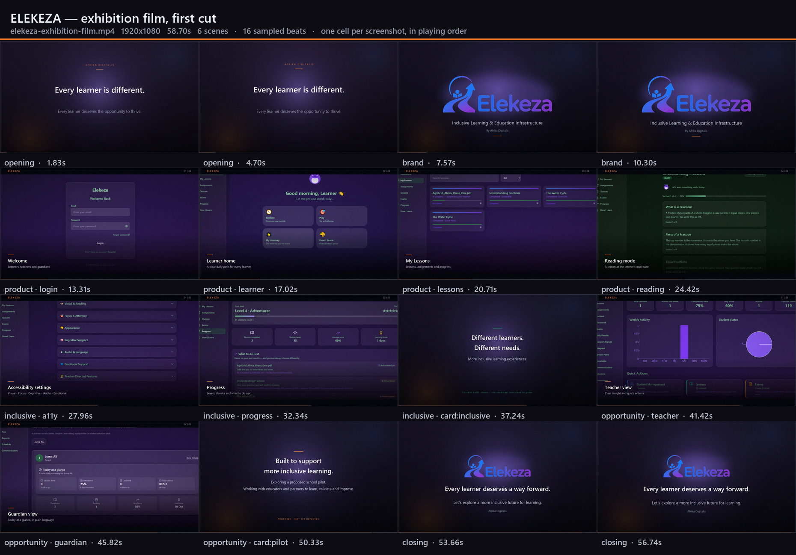
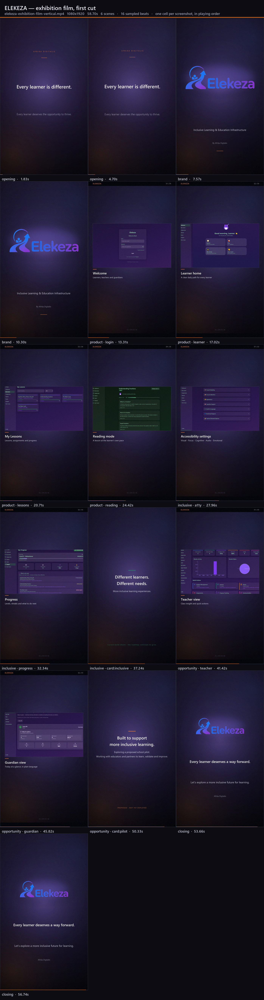

This is the cut to screen on the venue's projector or main display.
For a side display, a phone or a social teaser. Same narration and same desktop screenshots as the primary cut, laid out in a full-width band so the UI keeps its true proportions — it does not pretend to be a mobile build.
Built by sampling the rendered video — one cell per screenshot beat, in playing order, so what you see is what plays.

